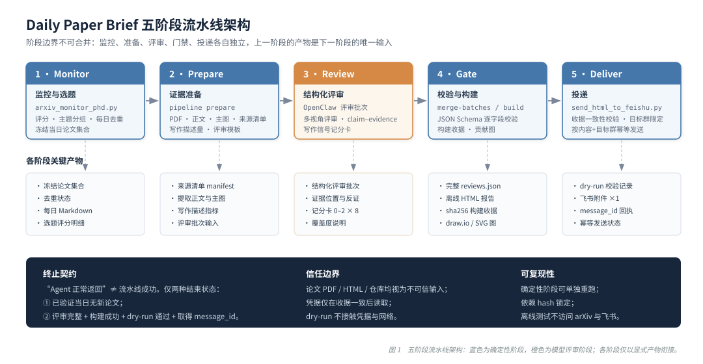
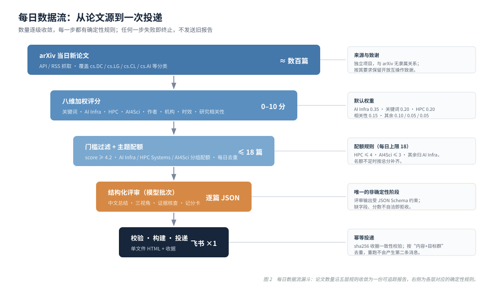

01 / 项目一页看懂
这个项目做什么
Daily Paper Brief 把每日 arXiv 来源论文转成一份可追踪的研究报告。它强调的是证据链与确定性：每个阶段只消费上一阶段的显式产物，模型评审的输出必须经过逐字段校验才能进入报告。
你会得到什么
- 按 AI Infra → HPC Systems → AI4Sci 主题排序、配额受控的每日选题（默认 ≤ 18 篇）；
- 每篇论文的来源清单、提取正文、主图（或显式兜底）与写作描述量；
- 中文为主的结构化评审：三视角分析、claim–evidence 核查、课题组画像、可复现性与工件风险；
- 固定记分卡
AI-writing-signals-v1.0的写作辅助迹象审计（含证据位置、反证与混杂因素）； - 一份自带构建收据（sha256）的单文件离线 HTML 报告，以及一次幂等的飞书投递。
Monitor → Prepare → Review → Gate → Deliver
监控选题 → 证据准备 → 结构化评审 → 校验构建 → 幂等投递
监控选题 → 证据准备 → 结构化评审 → 校验构建 → 幂等投递
它不做什么
- 不做正式同行评审，不证明引用正确；
- 不判断学术不端，不输出所谓“AI 生成百分比”；
- “AI 辅助写作迹象”是序数证据审计，任何分级都不能证明作者身份或研究有效性；
- “Agent 正常返回”不算流水线成功——必须满足终止契约（无新论文已验证，或评审完整 + 构建成功 + dry-run 通过 + 取得 message_id）。
信任与版权边界
- 论文 PDF / HTML / 作者主页一律按不可信输入处理；
- 凭据只在 HTML 与收据一致后读取；
--dry-run不碰凭据和网络； - 论文内容权利逐篇独立，公开托管含主图/全文的报告前需逐项确认权利依据。
02 / 图解
两张图看懂流水线
图 1 给出五个阶段的职责、入口脚本与关键产物；图 2 给出每日论文数量如何沿确定性规则收敛为一份报告。


03 / 在线 Demo
三个可以上手的小实验
全部在浏览器本地运行，不访问网络。论文与评审内容均为合成示例，不对应任何真实论文。
Demo A
选题评分排序器
复刻arxiv_monitor_phd.py 的八维加权评分（简化版），拖动权重与门槛观察排序变化
合成示例数据 · 简化复刻，权重可调；词条匹配等细节以仓库代码为准
评分规则：关键词命中标题 +3 / 摘要 +2；AI Infra 需 AI 词与系统词共现且标题含系统词；HPC 需锚点词与机制词共现；AI4Sci 需领域词与基础设施词共现；关注作者 +2.5、机构 +1.5；24h 内 +1.0 / 72h 内 +0.5；研究相关性封顶 5。总分 = Σ 子分 × 权重，封顶 10。
Demo B
报告卡片样式预览
按arxiv_report_pipeline.py 生成的 Daily arXiv Report 结构渲染（静态合成示例）
合成示例 · 非真实论文评审结果
优先级：高
Daily arXiv Report / 每日 arXiv 论文分析报告
2026-09-04 · 抓取 412 · 推荐 6 · AI Infra 3 · HPC 2 · AI4Sci 1（数字均为演示占位）
解释边界：“AI 辅助写作迹象”是结构化的序数证据审计。自动指标未经单篇论文校准，不是概率；任何分级都不能证明 AI 作者身份、学术不端、抄袭或研究无效。
1
面向千卡集群大模型预训练的流水线并行通信压缩框架
A Pipeline-Parallel Communication Compression Framework for Thousand-GPU LLM Pretraining (Synthetic)
为什么值得看：把通信压缩显式嵌入流水线并行的气泡区间，声称在千卡规模下端到端吞吐提升一个可见量级，且给出了集群拓扑与同步频率的消融。（合成示例）
AI 辅助写作迹象（演示）
分级
低（low）
置信度
High
序数审计分
2 / 16
使用披露
未发现
阳性指标族
lexical_style
审阅覆盖度
摘要/引言 + 4/5 内容区
该结果只评估写作辅助迹象，不能证明作者身份、学术不端、抄袭或研究有效性。
主张—证据核查 / Claim–evidence audit
| 主张 | 证据 | 强度 |
|---|---|---|
| 通信开销占比显著下降 | 1024 GPU 模拟扩展曲线 + 逐层计时表 | 较强 |
| 精度无损 | 仅给 3 个种子的验证集曲线，未给统计检验 | 有限 |
多视角分析（节选）
系统与基础设施视角
压缩算子与调度耦合的实现成本被低估；故障恢复路径未讨论。研究价值与风险
方向有复用价值；风险在于基线实现细节未公开。评测有效性
缺真实集群上的长时运行数据，外推需谨慎。
Demo C
写作信号记分卡 AI-writing-signals-v1.0
8 个固定指标各记 0/1/2，标签规则与校验器逻辑一致
交互演示 · 评分锚点：0=未观察到；1=单处孤立弱证据；2=两处以上实质证据或一个已验证直接残留
0 / 16
low（低）
该结果只评估写作辅助迹象，不能证明作者身份、学术不端、抄袭或研究有效性。0–16 为序数审计分，不是概率。
04 / 部署验证
拉取之后，多久能跑起来
以下步骤在一台干净环境中按顺序执行过：克隆仓库后无需任何手工修补即可通过全部离线门禁。
克隆并检查环境
需要 Python ≥ 3.12 与 Poppler（pdftotext / pdftoppm）。
git clone git@github.com:Sconcer/daily-paper-brief.git cd daily-paper-brief python3 --version # ≥ 3.12 which pdftotext pdftoppm
一条命令完成引导
scripts/bootstrap.sh 自动建 .venv、按哈希锁安装仅有的 3 个依赖（requests / lxml / Pillow）、复制本地配置模板，并依次跑全部离线门禁与单元测试。
./scripts/bootstrap.sh
离线门禁（不访问 arXiv / 飞书）
python3 scripts/verify_bundle.py python3 scripts/security_audit.py python3 scripts/check_open_source_readiness.py python3 -m unittest discover -s tests -v
本页自身的部署
本页是 docs/site/ 下的纯静态站点，由 GitHub Actions（pages.yml）发布到 GitHub Pages；本地预览只需 python3 -m http.server -d docs/site。
干净克隆验证记录
- 全新
git clone后verify_bundle.py通过：必需文件齐全、无私有状态文件、无凭据模式命中； security_audit.py与check_open_source_readiness.py通过；unittest discover -s tests -v全部用例通过（默认套件离线）；bootstrap.sh在已装 Poppler 的机器上一条命令完成环境构建与测试；- 静态网页本地
http.server预览渲染正常，无外部依赖即可浏览（字体走 CDN，可降级到系统字体）。